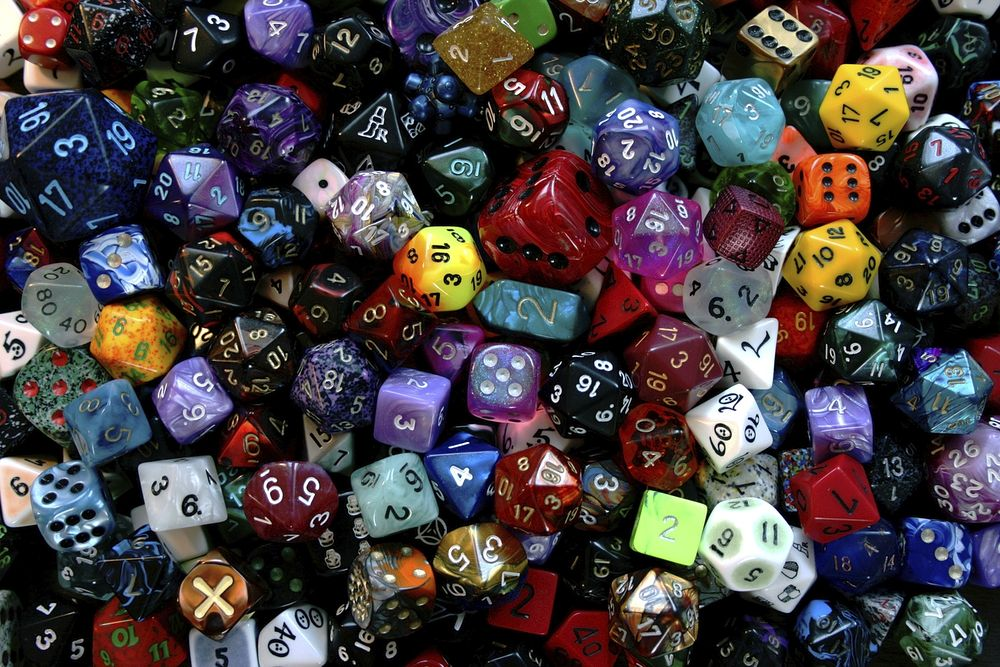

47th ICPC World Championship · Problem C
See how they roll! According to a famous story, Warren Buffett once challenged Bill Gates to a simple game of dice. He had three dice; the first player could examine them and choose one of the three. The second player would then choose one of the remaining dice, and both players would roll their dice against each other, aiming for the highest numbers. Warren offered to let Bill go first, but this made Bill suspicious so he opted to go second. It turned out to be a wise choice: these were intransitive dice. The first die had an advantage when rolling against the second, the second had an advantage when rolling against the third, but the first did not have an advantage when rolling against the third!

To formalize this: define a “die” as any shape with at least one face such that each face shows a positive integer. When a die is rolled, one of its faces is selected uniformly at random. When two dice roll against each other, the die whose selected face shows a higher number earns 1 point; if both numbers are equal, each die earns 1/2 points. For dice D and D′, define score(D, D′) as the expected number of points D earns from a single roll against D′. If score(D, D′) > 1/2, we say that D has an advantage over D′; if score(D, D′) = 1/2, the two dice are tied. For example, if D is the first die in the sample input and D′ is the second, score(D, D′) = 4/9 and score(D′, D) = 5/9, so D′ has an advantage over D.
Given two dice D1 and D2 such that D1 has an advantage over D2, you want a third die D3 that forms an intransitive trio with the other two. Among all D3 that have an advantage over or tie with D1, compute the lowest possible score(D3, D2). If this is less than 1/2, you can make an intransitive trio! Similarly, among all D3 such that D2 has an advantage over or ties with D3, compute the highest possible score(D3, D1).
The input contains two lines, each describing one die. One of the dice (the first or the second) has an advantage over the other. The die with the advantage is D1 and the other is D2.
The first integer on a line gives n (1 ≤ n ≤ 105), the number of faces on the die. Then follow n integers fi (1 ≤ fi ≤ 109 for each 1 ≤ i ≤ n), giving the integer on each face.
Output one line containing the lowest score(D3, D2) and the highest score(D3, D1) under the above conditions. The two scores do not need to use the same die D3. Your answer should have an absolute error of at most 10−6.
6 1 1 6 6 8 8 3 2 4 9
0.291666667 0.750000000
4 9 3 7 5 3 4 2 3
0.500000000 0.500000000